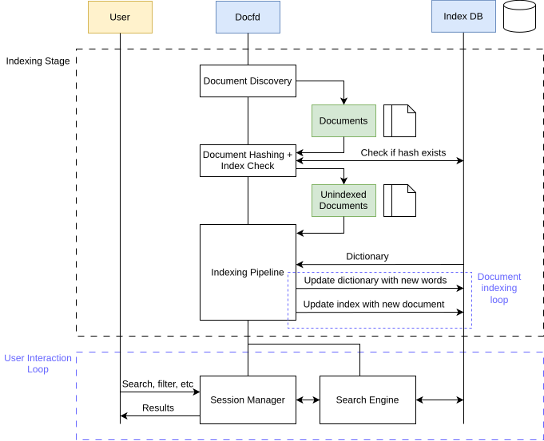

Online Demo | User Guide | GitHub
Docfd is local document search tool with a Terminal User Interface (TUI) that allows you to fuzzy search for a phrase across multiple lines, across text files, PDFs, DOCX, etc.
Compared with other local search tools, Docfd supports a more ad hoc search style. Users are not required to set up a managed central document repository or preconfigure which folders in their home directory should be included or excluded. Instead, Docfd processes unindexed files on demand when invoked, defaulting to scanning the current directory recursively. Because it does not periodically index files in the background, its CPU and memory use occurs when the user explicitly runs it, reducing the possibility of unexpected resource usage disrupting other desktop applications.
Docfd is designed for personal or small-office collections of up to roughly a thousand documents. Its main design targets were quick cached startup, acceptable fresh indexing time, and modest memory use on an ordinary laptop. These constraints led to on-demand indexing and a disk-backed inverted index, trading large-corpus performance for a smaller desktop footprint.
Read about the design constraints and alternatives considered.
TODO
Docfd also provides a non-interactive mode for scripting uses:

But since this is not the primary use case, and some gaps remain, e.g. structured JSON output of search results.
See here to get started.

See here for engineering details.
Docfd follows Semantic Versioning
(SemVer), with the occassional suffices such as -alpha.X
when the some design decisions are still in flux and committing to
SemVer fully would have lead to many version bumps.
Releases for tagged versions are built through GitHub CI/CD pipeline, which was chosen for convenience and for macOS build support. Prior to adding macOS builds pipeline, Docfd was more or less following the reproducible build principle with version locking via opam lockfile (opam is the go-to package manager for most OCaml users). But since opam lockfile is not yet crossplatform (as of 2026 Sep 3), the use of lockfile was dropped.
In principle there are ways around, e.g. run the project dependency tracking file through a script to lock down the concrete versions, but this was not explored further as this is fairly low priority for a non-safety-critical project such as Docfd.